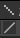

A note about performance
Originally, After Effects is not meant to be an animation software, it is a compositing tool. This means its priority is image quality against performance.
But it includes a lot of tools which work really well to build cut-out animation, and even vector animation, like parenting, the puppet tool and especially expressions. And After Effects is very good at manipulating pixel assets (better than vectors), which makes it also a decent software for cut-out character animation.
These last few years, a lot of third-party tools were built on top of these features, specifically made for character animation; Duik was the first in 2008, followed by others (Rubberhose, Joystick and Sliders, etc.). Before that, there was no real character rigging, and it was fine. But it brought high-level rigging and animation to After Effects, and very nice films were made with this technique.
It also brought a lot of performance issues. Remember? After Effects was meant to do compositing, not character animation.
In this section, we’re going to see how to improve the performance of rigged characters in After Effects and with Duik.
Tip
Most of these explanations are valid for other scripts too, as they’re all built on top of After Effects features. On the contrary, this is not always true for plugins which add new features to After Effects instead of automating the use of existing features.
Choose the right tool
Honnestly, if you’re in some kind of very advanced rigging and animation, if you’re in top-level quality and need both performance and versatility, After Effects may not be the right choice. Did you know South Park was made with Maya? Why don’t you animate in Blender with a nice rig? You can rig 2D characters in 3D softwares, and you won’t have performance issues there.
But we agree that sometimes, it’s easier and quickier to use less softwares, to not have to render animations between different softwares and to animate in the same software which will be used for compositing. In this case, Duik is the tool you need for character animation in After Effects.
Know the culprits
Some tools are more compute-intensive than others. You have to know which one to avoid or to optimize to fix performance issues in your rigs.
You must know that Duik only uses native After Effects features, it automates things you could do by yourself (provided you have a lot of time to spend at it). This means it is not Duik by itself which causes performance issues, it is how native After Effects features are used together and how many of them at the same time.
This is a non-exhaustive list of features you have to be careful with. They are ordered by priority on your performance improvement process.
Note
Some explanations here might not be perfectly accurate about how After Effects works (there are caching systems and other tricks to improve performance we won’t explain here), but the point is to explain where to look at to improve performance.
Preview quantity and quality
This is not what will improve performance the most, but it’s measures you can take without making any compromise on the features of your rig. When animating, you can downgrade the quality of the preview, and the quantity of layers displayed.
Do you really need to display the Structures? Do Structures and Controllers really need anti-aliasing, or could they be set to draft mode? Actually, do controllers need to be shape layers or could they be simple nulls? Do all layers have to be vectors or could they be pre-rendered to an image format? These are the kind of questions you have to ask yourself.
There are a few options to speed up the preview and your workflow in After Effects.
-
You can set the overall quality of the preview.

The default option, Adaptive Resolution, does not seem to be the best choice, as constantly changing the resolution of the preview when moving layers does not feel fluid at all. Off (Final Quality) does feel way more fluid when working, as does Fast Draft. We don’t actually see much difference between Fast Draft and Off (Final Quality)…
-
You can change the resolution of the preview.

Again, the default one, Auto may not be the best for fluidity if you have this habit a lot of people have to constantly zoom in and out, to work details and have an overall look at the image, and if you don’t always do RAM previews at the same level of zoom. In this case, After Effects will be constantly rendering the preview at different resolutions and this has a very bad impact on performance and fluidity. It may be best to wisely choose a resolution and stick to it. Most of the time, when animating in HD or 2K compositions (or bigger), Half resolution or even Third is enough.
-
You can change the quality of the preview per layer too.

In the attributes of the layer, clicking this icon will disable anti-aliasing and other algorithms which are not needed for animation, and this will greatly improve performance. Do the controllers really need the best quality?
-
The quantity of layers enabled greatly impacts performance. Solo the layers as much as possible, hide anything not needed. For this workflow, our other free tool Dugr can be a great help, and it is fully compatible with Duik.
Shapes vs images
Every time you use a bezier shape, After Effects has to rasterize it before it can display it and render the composition. This means the more shape layers you have, the lower the performance will be. Every time it is possible, you should precompose the shape layer, to the smallest composition you can: this way the precomposition is an image layer, with actual pixels, and faster to render. You can even render the precomposition to an image sequence to replace it or use as a proxy. Proxies are great!
Tip
A shape layer without animation nor expressions in its content should always be replaced by an image.
Especially when using the puppet tool! As it works in pixels and not with the vector data, you won’t lose quality, there’s no need to keep the vectors. And precomposing the shape will fix a lot of issues…
It is NOT a good idea to use shapes hoping to be able to scale them.
- It will have a bad impact on performance, scaling is another step in the render process which takes some time. Especially if you have a lot of shape layers.
- Scaling rigs is very complicated as it will probably break a lot of expressions.
Before working your animation, you should always draw a storyboard; this way you know which scales are needed for your character and you can build a different rig for each.
When you see only a close up on the torso and the head, do you really need the rig of the legs? When the character is far away, do you really need complex facial expressions? Will you even draw the character the same way?
If you’re using vectors only for scaling purposes, you can rasterize them and greatly improve performance.
Precompositions
Precompositions are an under-estimated way to improve performance.
Each time you duplicate a layer, you have to ask yourself if you can precompose it first in any way and then duplicate the precomposition. Very often, you can precompose!
Hint
Keep in mind that you can use expressions to link stuff from the precomposition to the main composition.
With the Parent accross compositions tool of Duik, you can even parent a layer in a precomposition to a layer outside of it.
The Extract Controllers tool can be of great help too.
When you precompose before duplicating the layer(s), all its transformation and effects will be rendered only once and only then they will be duplicated. Without precomposition, everything has to be rendered twice (or more if you duplicate again the same layer).
Image Formats
Not all formats are equal. If you’ve understood what we wrote just above, you may be beginning to use more image formats and less shapes, whether it’s for proxies or final render. What formats should we use?
-
When rendering animations, most of the time it’s better to use image sequences than video files. There is at least one very good and simple reason for it: if the render fails, you won’t have to start it all again, but just the remaining frames. If you want to change something in the animation, you will only have to render the corresponding frames.
-
You should use a format which suits your needs (color depth, alpha channel), but also a format which is fast to read and write by After Effects! Our advice is to use OpenEXR (with PIZ compression): it’s lossless, it handles 32bpc, and has an alpha channel. It is also way faster to read/write than PNG in After Effects, and files are usually smaller with EXR. It’s better than the RAW format of your camera, it’s great for storing HDRi. Premiere and other editting software, as well as Photoshop, can read them; as specified in the name, they’re open and widely compatible. What more could one ask for?
Puppet tool
The puppet tool, as awesome as it is, especially with the new engine from latest versions, is very often a source of great performance issues. You won’t notice it on a single layer, but when your rig is finished and you have a lot of layers using the puppet tool, or several characters together, you might be very annoyed by performance issues.
Before using the puppet tool, always ask yourself if you could do the same stuff with simple tools. Very often, you could just animate the Bezier paths of vector characters instead of using the puppet tool.
Example
When rigging an arm made of vectors, you could first animate the arm bending, keyframing the Bezier paths properties instead of using the puppet tool.
Then, you can connect this animation to the rotation of the Structure of the forearm using Duik’s Connector.
A nice side effect is that you have a lot more control on the shape of the arm when it bends.
Expressions
Expressions in After Effects are all evaluated (computed) when rendering each frame of the composition. This won’t be an issue if they are simple, with basic calculations like the vast majority of expressions you may write by yourself.
Now, imagine an expression, which, when it is evaluated (i.e. at each frame of the composition), needs to compute previous movements of some other layers - this is what simulations do. This means it also needs to compute everything which influences the layers in previous frames of the composition, including other expressions, which might be complex too… This is a nasty situation where performance will drop dramatically. You’ll have to take care of what needs to be computed, and what the hierarchy of the expressions and layers is.
Some features of Duik use very complex expressions, and compute-intensive calculations, like the IK which involves more maths than simple additions and multiplications, or simulated automations like the spring which have to compute previous movements. Even if we’ve been hard at work to fix performance issues, in some cases combining a lot of expressions (i.e. Duik features) can lead to poorer performance when animating, or even so much lag that the rig cannot be correctly manipulated anymore.
Note
Don’t worry about simple expressions you create manually, like links between properties, or simple wiggles, etc. They’re not a problem, even if you have hundreds of them.
When talking about complex expressions, just remember that the more expressions = the more performance issues you’ll have.
Performance and Duik
Duik includes some options to help you adjust the performance of your rigs.
Controllers
In the additionnal panel of the controllers, there are three options to change the way they are displayed which have an impact on performance:
-
You can bake their appearance, which will remove all controls and expressions used to adjust how they are displayed, but are not needed by the rig itself. It is strongly advised to do this every time you finish a rig, when everything is ready to be animated.
Tip
As the controllers are standard shape layers, you will still be able to adjust their appearance by editting the content of the shape layers anyway.
-
You can choose between Draft or Best Quality mode for drawing the shapes of the controllers (with or without anti-aliasing).
Note
This sets the layer quality option of the controllers when they are created, and it can be changed afterwards at any time in After Effects.
-
You can choose to use null layers instead of shape layers. This may be less user-friendly, but improves performance.
Structures and bones
As for the controllers, the additionnal panel of the Structures and the Bones provide a Bake appearance option to improve performance.
Note
The Auto-rig bakes the appearance of the Structures by default when it is run. There’s an option to change this.
Parent constraint
Caution
The parent link can be very heavy.
The Parent constraint is a great tool but… It can be very computer-intensive. To be able to compute the location of a layer, it has to compute the previous movement of all it’s parents on the previous frames of the composition. This means the longer the composition is, the slower it will be. Avoid using it in very long compositions, and try to use it only when necessary. Often, it is easier and quickier to just split the layer when its parent must change.
IK
The IK used in a character like the ones created by the Auto-rig will not be a problem unless you have a lot of them, but there are a few tips to make them even lighter.
-
You can disable the guides on the controllers (the dashed lines representing the IK) in the effects of the controller.
-
When you deactivate the IK and animate in FK, the performance is usually better, and FK animation is actually easier than IK.
Automations
Some automations are heavier than others. These are the ones you should be worried about:
Spring (simulated)
The default Spring automation should not be an issue most of the times. But beware of the simulated mode! As every simulations, it involves a lot more computation and can quickly become a reason why your rig won’t work anymore. Try to use as few as possible, and keep in mind that most of the time, animating hanging hairs or the antenna of a car is quick and easy with a few keyframes. Way quickier and easier than character animation.
Wheel (curved motion)
The default Wheel automation is very light won’t be any problem. But be careful with the curve mode, as it needs to compute the trajectory of the wheel on all the previous frames of the composition. At the end of a long composition, this can be very heavy.
Tip
You should always cut/hide a layer with automations as soon as it is outside of the frame!
Other automations
The other automations are not particularly heavy. Just be careful with automations like the [Effector] which is often used to drive a lot of layers together, which means its a lot of expressions.
Choose the right version of After Effects
All versions of After Effects behave differently. Do not hesitate to test your rig on different versions and see where you feel it’s better!
From our tests, animating in CC (12) or CC2014 (13) is nicer, as the UI is more responsive and fluid. Of course, this is in case you don’t need master properties or expressions to control Bezier paths (available since CC2018 (15)), but there are workarounds from using master properties, and expressions controlling Bezier paths are quite heavy and should be avoided when possible.
When working with lots of effects, like when compositing, this is not true, and you may prefer a more recent version which will render the frames faster. In this case, the latest version is always the best.